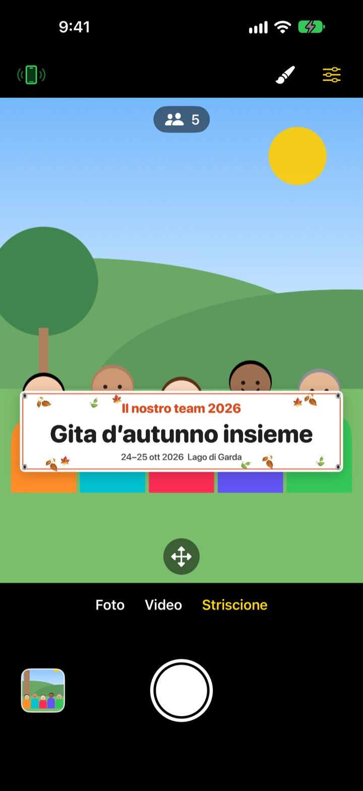
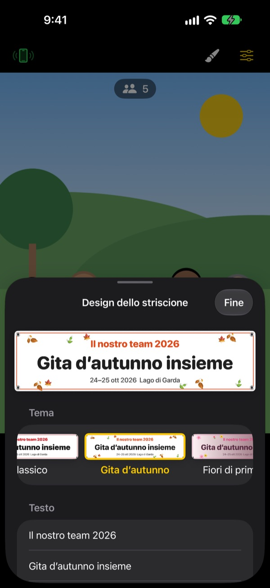

La foto di gruppo con lo striscione.
Senza stampare nulla.
Scrivi il testo, scegli un tema e lo striscione compare proprio davanti al gruppo. L’iPhone di un amico diventa telecomando con una scansione QR, così anche chi scatta finisce nella foto.
Tutte le funzioni sono gratuite. Richiede iOS 17 o successivo.

Crea uno striscione
Modifica il testo e tocca un tema. Premi l’otturatore e, come nell’app, parte un conto alla rovescia di 3 secondi.
Far stampare uno striscione per una sola foto?
Lo ordini, lo porti alla gita e poi nessuno sa dove metterlo. E siccome non resta nessuno a scattare, c’è sempre qualcuno fuori dalla foto. ShutterLink mette lo striscione nell’inquadratura e trasforma l’iPhone di un amico in telecomando, così nella foto con lo striscione ci siete tutti.
Lo striscione giusto per il tuo evento in un minuto
Scegli tra 13 temi, come gita d’autunno, fiori di primavera, festa di fine anno, compleanno, giornata dello sport, laurea, matrimonio e workshop aziendale, poi scrivi fino a tre righe di testo.
Cambia sfondo, carattere, decorazioni, colori e proporzioni, e aggiungi il tuo logo. Scegli stoffa, vinile o carta: lo striscione di stoffa si incurva, si stropiccia e ondeggia al vento come uno vero.

Un telecomando senza installare nulla
Tocca il pulsante telecomando in alto a sinistra e compare un codice QR. Il tuo amico lo inquadra con l’app Fotocamera e ShutterLink Remote si apre subito come App Clip e si collega.
Nell’anteprima dal vivo del telecomando si vede anche lo striscione: inquadri e scatti. Ogni foto arriva subito all’iPhone telecomando, così anche un amico senza l’app può salvarla e condividerla all’istante.
Si parte in tre passi
- 1
Sistema l’iPhone
Apri ShutterLink e appoggia l’iPhone su un treppiede o una mensola.
- 2
Posiziona lo striscione
Scegli Striscione in basso, imposta testo e tema con il pennello, poi tocca il pavimento dove starà il gruppo.
- 3
Alza la mano
Alza il palmo o premi l’otturatore sul telecomando. Il timer conta e scatta.
Pensato per le foto di gruppo
- Gesto del palmo · scatto con applauso
- Alza il palmo aperto verso la fotocamera o batti forte le mani una volta per avviare il timer
- Scatto con sorriso
- Scatta da solo quando tutti sorridono con gli occhi aperti
- Timer 3 · 5 · 10 · 20 · 30 s
- Una voce fa il conto alla rovescia, il flash lampeggia a tempo e il telecomando vibra in mano
- Chiedi a tutti di guardare la fotocamera
- Toccalo e l’iPhone che scatta richiama a voce l’attenzione del gruppo
- Raffica da 3 · 5 foto
- Sceglie la foto migliore in cui tutti hanno gli occhi aperti. Puoi cambiarla con un’altra nella galleria
- Persone · bordi · livella
- Conta le persone inquadrate, avvisa se qualcuno è sul bordo e mostra una livella quando l’iPhone è inclinato
- Intervalli da 3 s a 1 min
- Riprendi un tramonto o l’avanzamento di un lavoro a intervalli regolari
- Controlli della fotocamera
- Messa a fuoco ed esposizione con un tocco, compensazione dell’esposizione, flash, griglia, zoom da 0,5x fino a 10x a seconda del modello, fotocamera anteriore e posteriore, video
- Modalità semplice
- Il telecomando mostra un solo grande pulsante di scatto che chiunque può premere
- Tasti del volume · Controllo fotocamera
- Scatta direttamente dall’iPhone che fotografa, senza telecomando
In modalità Striscione non sono disponibili flash, raffica, zoom e fotocamera anteriore. Timer, scatto con il palmo e telecomando funzionano normalmente.
Tutte le funzioni sono gratuite
Gratis
- Modalità Striscione con 13 temi
- Telecomando senza installazione (App Clip)
- Scatto con palmo, applauso e sorriso, più timer
- Foto migliore, conteggio persone e livella
- Video e scatti a intervalli
Lascia una mancia (facoltativo)
- Invia una mancia piccola, media o grande dalle Impostazioni
- Le mance non sbloccano né bloccano nulla
Non è un abbonamento: paghi una volta, solo quando lasci la mancia.
Niente pubblicità, nessun account.
Domande frequenti
Cosa mi serve?
Installa ShutterLink sull’iPhone che scatta (iOS 17 o successivo). Sull’iPhone telecomando non serve installare nulla, basta Internet la prima volta che apre l’App Clip. Tieni il Bluetooth attivo su entrambi e gli iPhone vicini, di solito entro 10 m.
Scansiono il QR ma l’App Clip non si apre.
Controlla che l’iPhone telecomando sia connesso a Internet. Puoi anche inserire in ShutterLink Remote il codice a 4 cifre dell’iPhone che scatta e toccare Connetti. Verifica poi che le App Clip non siano bloccate in Impostazioni › Tempo di utilizzo › Restrizioni contenuti e privacy.
Resta fermo su «Ricerca della fotocamera…».
ShutterLink deve essere aperto sullo schermo dell’iPhone che scatta. Controlla che il Bluetooth sia attivo in Impostazioni › Bluetooth su entrambi gli iPhone. Il codice cambia a ogni apertura dell’app: se l’hai riaperta, usa il nuovo QR o codice e tocca Riprova.
Vedo «Autorizzazione Bluetooth negata».
Attiva ShutterLink in Impostazioni › Privacy e sicurezza › Bluetooth. Il telecomando è una App Clip e potrebbe non comparire nell’elenco: in quel caso scansiona di nuovo il QR e tocca Consenti quando richiesto.
L’anteprima dal vivo scatta o è sfocata.
L’anteprima è ridotta di proposito per viaggiare via Bluetooth. Foto e video vengono salvati nella qualità piena dell’iPhone che scatta. Muri, persone o troppa distanza possono causare scatti, ma l’otturatore e gli altri controlli continuano a funzionare.
Dove finiscono le mie foto?
In Foto sull’iPhone che scatta e nella galleria dell’app. Anche il telecomando riceve una copia, ma non la salva da solo: salvala o condividila prima di chiudere il telecomando. Se in Foto non arriva nulla, consenti ShutterLink in Impostazioni › Privacy e sicurezza › Foto.
I miei video non hanno audio.
Attiva ShutterLink in Impostazioni › Privacy e sicurezza › Microfono.
Posso collegare più telecomandi?
Sì. Più iPhone possono collegarsi insieme con lo stesso QR o codice, e ognuno fa scattare la stessa fotocamera.
La connessione cade mentre scatto.
ShutterLink tiene lo schermo acceso finché è aperto. Bloccare l’iPhone con il tasto laterale o passare a un’altra app interrompe la connessione, quindi tieni l’app sullo schermo mentre scatti.
Le mie foto vengono caricate da qualche parte?
No. I due iPhone si collegano direttamente via Bluetooth e foto e video restano solo sull’iPhone che scatta e sul telecomando collegato. Funziona anche in montagna o in spiaggia senza campo, e senza account.
Non hai risolto o hai trovato un bug? Scrivi a leeo@kakao.com, indicando modello e versione di iOS di entrambi gli iPhone: così possiamo controllare prima.